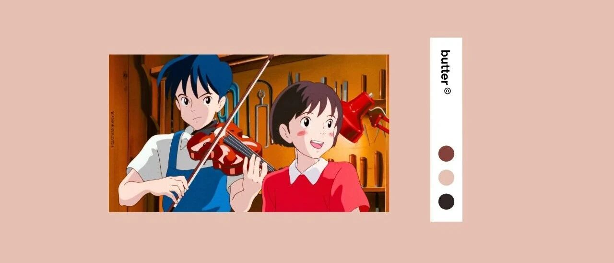

1月总结｜你继续差吧，我不等你了！
点击关注秋秋很开心
每周一篇好用APP、学习、成长干货

图：@网络
文：@秋秋
大家好，我是秋秋。
1月如期结束，总体比我想象中过的要丰富，而且有计划的时候，每天都有很多事可做。
我的1月关键词是坚韧，完成了这些：

一、学习
每周一本书，周末2个电影
1.读书

我喜欢读完一个章节再做笔记，手写记笔记让我有种很踏实的感觉。
原计划中的4本，我看完了3本。
（1）《你当像鸟飞往你的山》

这一本是我读的最慢的一本，差不多12月就开始读了，一直到这个月才读完。
因为女主角的故事，对我的震撼，需要慢慢体会。

我大学学的是心理学，对于原生家庭这个词并不陌生。
但当我看到女主的爸爸像“疯子”一样执拗，她的妈妈也倒戈父亲的阵营，还是觉得唏嘘。
我很喜欢女主塔拉的哥哥泰勒，在那样的家庭中还能坚持学习、走出大山，并给自己的弟弟妹妹打开一扇窗。
可即使已经上了剑桥的塔拉，接受完教育，却依旧无法直接摆脱原生家庭的束缚。

如果你出生在一个幸福的家庭，那很幸运。
如果是塔拉那种不幸的家庭，也许勇敢告别，才是最正确的选择
（2）《万历十五年》

这本书我看完，还去看了几集《大明王朝1566》。
我最深的感悟就是：封建社会各种政策规则的执行，不是靠历法，而是靠礼数。
不断的给大家强调，上行下效，规规矩矩，从天子开始做起，这种思想传达，对一个通讯并不发达的封建国家，才最有效。

读史使人明智，读完这本书我也感受到了一种历史的浩瀚。
当下足够重要，但只有能吸取前人的教训的人，才能走的够长远。
（3）《自控力》

这本书相比于前面两本就比较轻松，我读的电子版。
书里面给到的方法比如冥想、饮食、原谅自己等等，单独拿出任何一个，都会对自律很有帮助。
我还在B站上找到了原作者的演讲，里面一个方法（我先不说），不用费力就能提高自己的控制力，很有帮助。


大家感兴趣的可以直接读一读，或者看看视频。
会对你的自律提升，认知方面带来改变。
2.电影
这部分看了4部，有2部漫威、2部其他。

我真的很讨厌“贞洁”这个词，因为非洲的割礼，让我感觉文明距离我们好像还很遥远。
但不仅仅是非洲，我之前看的阿米尔汗主持的一个节目《真相访谈》，里面不仅揭露了性别歧视、家庭暴力，还有各种社会问题。
甚至不能说社会问题吧，都已经成为了一种现象。

看到这些真的很气愤，但除了独立、走出去我也不知道还有什么办法。
（2）《心灵奇旅》

这是我额外看的一部，但非常推荐大家！
我们都在追求世俗意义上的成功，有车、有房、有成就感，可当下的生活也很重要。
我会因为吃到一顿美食而开心，会赚钱了好好犒劳自己，会每周出去看看所在的城市。
只有生活，切切实实是自己的。
（3）《钢铁侠1、2》

这两部我是一起看的，但说实话，我看的有点尴尬。
个人并不喜欢一个主角、从懦弱到突然一个事件改变自己，最后成为超级英雄的故事。
所以其他几部漫威电影就没有再看。
而其他看电影和话剧的时间，都用在了电视剧《山海情》上。差不多用了2个周末的时间，但觉得很值得。
3.话剧——《活着》

只看了这一部。
因为之前看过《活着》的小说和电影，对剧情大部门了解，但话剧还是第一次看。
我除了佩服黄渤能那么熟练的把剧本背下来，还觉得话剧形式很新颖。
电影小说和原著差别挺大，但是看话剧，你能感觉就是在看书，原汁原味。
4.演讲——《如何在3年内赚100万》

别被这个名字给欺骗，其实里面讲的是成功的关键，和赚钱关系不大。
不过演讲中提到的关键都很重要，比如阅读、你身边的5个人就是你未来的样子等等。
演讲不长，13分钟，特别适合我上次说的早起后，打鸡血用。
二、工作
公众号文章和视频，一共24条
1.公众号
公众号上，我1月份一共发表了12篇原创内容。

其中4条是干货类，也是写的比较久的。
3条有趣分享，剩下的就是每周总结。
大体算完成，在写作上我还是希望保持初心，就发现真正有用的、好玩的与大家分享。
而一个好消息是，1月公众号涨粉比较明显，差不多涨了之前的30%，阅读量也高了不少，甚至有7000，9000以上的，感觉很棒。
2.视频
一共发布11条原创视频，做视频真的比写文章还要累。

月初是做了文具安利、期末复习攻略、ipad笔记；
月中做的少女心手机桌面教程，包括大家问的比较多的安卓，专门出了2期；
月末更新了寒假英语逆袭策略、寒假兼职、好物安利。
因为很多选题和公众号不一样，所以就要再重新去制作，算下来每天都没怎么歇着。
三、生活
每个周末都出去逛逛～
对于生活，1月份我给自己定的目标很低，就每周出去玩一次就可以，平时也多运动。
说起来，虽然我在家办公，但周一到周五也不闲着，只有周末才能完全放松～
1.第一周
我们去逛了文具店和书店，打卡了很多好玩的。

吃大碗宽面还发生好玩的事专门跟大家分享了一下，书店喜欢的书也在第二周抽奖送了出去。
第一周我还尝试了喜欢的果酒，到现在还念念不忘。
2.第二周
这周去滑雪啦～还自学做了寿司。

滑雪场上的小兔子超级可爱，虽然外面很冷，但是出门就感觉很自在。
当然也是这周，我买了新手机，出了安卓抖音新号@秋秋爱安卓，还有个小爆款的视频。
另外，没想到做寿司那么简单，看来多尝试真的会发现新世界！
3.第三周
这周末没有出门，因为王同学要准备百度的转正答辩，我们就在家学习了。

不过这周却是好好发力读书的一周，把之前的笔记都好好整理了一下。
小王同学也顺利通过了转正答辩，还在最后一天拿到了年终奖。
4.第四周
也就是上周，我买了新的相机，周末又出门了，去奥林匹克森林公园拍片子。

这周不仅吃了烤鱼，还吃了火锅，当然每天都有水果吃。
我还每天抽空和王同学听摄影课，倒是过的很充实。

总体而言，1月的日子比我想象的丰富。
每一天都很忙，但每一天都很踏实、快乐。
希望2月继续加油～ 好好生活，有期待、有行动、有结果。
ps：有盆友说想看理财的总结，一月收益差不多有1万2，就咬咬牙买了相机。
ps：二月的计划，马上就来！准备好没？
其他文章推荐：

原创文章，转载请告知本人并标注来源
粉丝vx：qiuqiu5261（朋友圈更新日常）
商务合作：17865514429 （微信）
请注明来意 :)
@微博：秋秋一日甜
喜欢记得星标，让我们一起成长